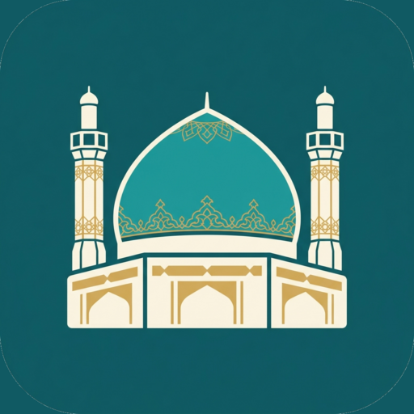

میراث جهانی یونسکو • زنجان
راهنمای هوشمند سلطانیه
کاوش در بزرگترین گنبد آجری جهان، آثار ایلخانی، شناساگر تصویری و گفتوگو با راهنمای تاریخی

دستیار هوشمند گردشگری و میراث فرهنگی سلطانیه برای شناخت بناهای تاریخی، تحلیل تصویر آثار و گفتوگو با راهنمای تاریخی. تمامی اطلاعات اصلی بهصورت محلی و بدون نیاز به فیلترشکن در دسترس هستند.